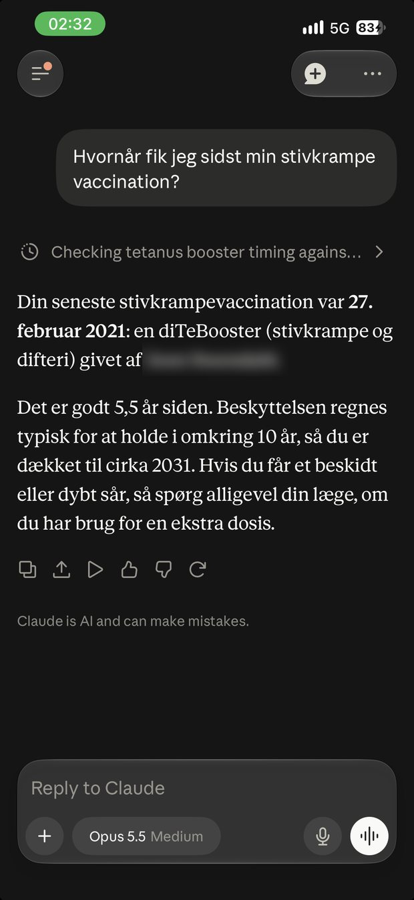
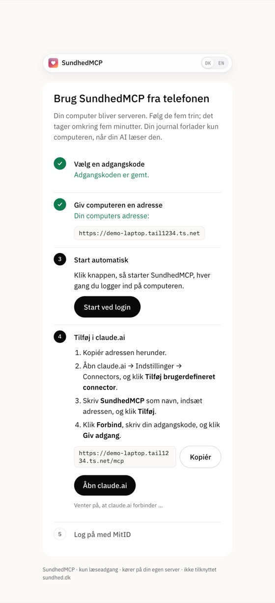

Din journal.
Også på telefonen.
Gør din egen computer til serveren, så kan Claude på telefonen læse din journal fra sundhed.dk, når computeren er tændt. Det tager omkring fem minutter.
Gratis og open source · Din computer er serveren · Ikke tilknyttet sundhed.dk

Før du starter
Installér tre programmer.
På en Mac, Windows- eller Linux-computer. Log ind på Tailscale, når det er installeret.
Opsætning
Tre trin.
Start SundhedMCP med én kommando. Guiden på din computer klarer resten og krydser hvert trin af.
Start SundhedMCP
Åbn Terminal, indsæt kommandoen, og tryk Enter. Guiden åbner i din browser.

Følg guiden
Vælg en adgangskode, klik “Åbn for claude.ai”, tilføj connectoren, og log på med MitID.
Spørg fra telefonen
Åbn Claude-appen, og spørg om din medicin, dine prøvesvar eller vaccinationer.
Kør kommandoen, og følg guiden.
npx -y sundhedmcp serve- Åbn Terminal. Mac: tryk ⌘ + mellemrum, og skriv Terminal. Windows: åbn PowerShell.
- Indsæt kommandoen, og tryk Enter. Guiden åbner på
localhost:8787/guide. - Vælg en adgangskode på mindst 12 tegn. Gem den i din adgangskodemanager.
- Klik “Åbn for claude.ai” og derefter “Start ved login”.
- Tilføj i claude.ai: Indstillinger → Connectors → Tilføj brugerdefineret connector. Indsæt adressen fra guiden, klik Forbind, og skriv din adgangskode.
- Log på med MitID på computeren, og godkend i MitID-appen. Log ikke på fra telefonen: MitID viser en QR-kode, som skal scannes med appen.
Bruger du allerede SundhedMCP i Claude Desktop eller Claude Code? Skriv i stedet: Sæt SundhedMCP op til min telefon
Privatliv
Din computer. Din journal.
SundhedMCP kører intet på en server af sin egen.
Din computer er serveren.
Browseren, MitID-sessionen og kopien af journalen bliver på din computer, i ~/.sundhedmcp. Er computeren slukket, svarer SundhedMCP ikke.
Din AI-udbyder ser det.
Det, Claude læser fra journalen, sendes til Anthropic på deres vilkår. Spørg kun om det, du vil dele.
Låst med din adgangskode.
Adressen er offentlig, men connectoren kræver din adgangskode, og guiden svarer kun på din egen computer.
Klar? Kør én kommando.
npx -y sundhedmcp serve